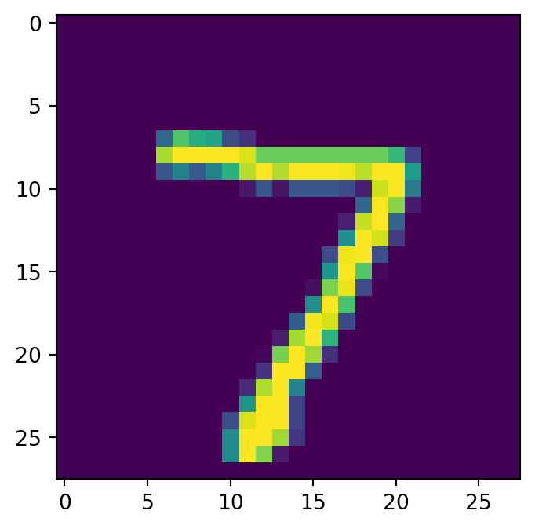
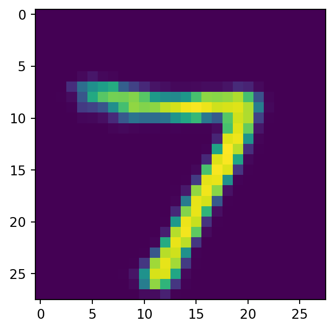
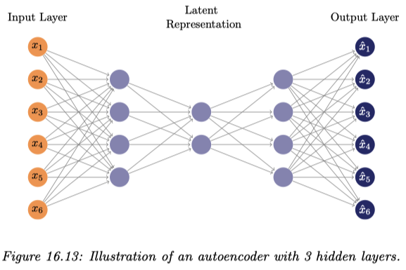

VAE：変分自己符号化器
PyTorch によるハンズオン
変分自己符号化器 (VAE) は，データを周辺分布にもつ潜在変数モデルを変分 Bayes 推論によって学習するアルゴリズムである． 従来計算・近似が困難であった変分下界を，ニューラルネットワークによって近似するアプローチである． 学習されたベイズ潜在変数モデルからはサンプリングによって新たなデータを生成することができるため，深層生成モデルの一つに分類されることもある．
A Blog Entry on Bayesian Computation by an Applied Mathematician
$$
$$
主成分分析 (PCA) とは，データを線型変換により低次元の線型空間に変換することで，データの良い要約を得ようとする多変量解析手法である．
この手法をカーネル法により非線型化することで，データの隠れた構造をよりよく表現することができる (Lawrence, 2005)．全く同様にニューラルネットワークを使って PCA を非線型化することもでき (Cottrell and Munro, 1988)，これが 自己符号化器 と呼ばれるアーキテクチャである．1
自己符号化器は，VAE と対比する場合には 決定論的 自己符号化器 (deterministic autoencoder) とも呼ばれる．
その結果，AE は基本的には生成モデルとしての使い方は出来ない．事前分布からのサンプル \(Z\sim\mathrm{N}(0,I_d)\) は全く想定されていない．
一方で，データ内の画像の復元は AE の方が上手であり，\(\beta\)-VAE の \(\beta\) が大きいほど画像にはもやがかかるようになる．


そもそも PCA は，３層からなる自己符号化器の自乗復元誤差の最小化と（学習された基底が正規直交化されていないことを除いて）等価になる (Bourlard and Kamp, 1988), (Baldi and Hornik, 1989), (Karhunen and Joutsensalo, 1995)．
しかし，３層のままでは非線型な活性化を加えても非線型な次元削減が出来ない (Bourlard and Kamp, 1988) が，４層以上では話が違い，PCA の真の非線型化による拡張になっている (Japkowicz et al., 2000)．

しかしこれにより目的関数は２次関数とは限らず，凸最適化の範疇を逸脱するので，大域的最適解が必ず見つかるなどの理論保証ができる世界からは逸脱してしまう．
上述の NN は砂時計型をしており，中央の中間層を細くすることで低次元の潜在表現を獲得しようとするものである．
このようにアーキテクチャによって潜在表現獲得を制御するのではなく，明示的に目的関数に含めることで潜在表現をすることができる．
例えば，元の目的関数 \(E\) に対して LASSO 様の罰則項 \[ \widetilde{E}(w)=E(w)+\lambda\sum_{k=1}^K\lvert z_k\rvert \] を加えることで，スパースな潜在表現の獲得を促すことが考えられる．この正則化項を activity regularization という．4
罰則を課す代わりに，rectifying neuron \(f(x)=x\lor0\) を用いることも，スパースな潜在表現を獲得することにつながる (Glorot et al., 2011)．
このように獲得された潜在表現は，\(l^1\)-罰則による場合よりも，「常にゼロ」になる素子が少ない．このことは脳の活動により近い (Beyeler, 2019) ため，好ましいと考えられている．
データベクトル \(x_n\) にノイズを加えたもの \(\widetilde{x}_n\) を元のデータに復元することを \[ E(w)=\sum_{n=1}^N\|y_w(\widetilde{x}_n)-x_n\|^2 \] などの目的関数で学習することで，ノイズにロバストな潜在表現を獲得することができる．
これは denoising autoencoder (DAE) (Vincent et al., 2008), (Vincent et al., 2010) として提案され，直ちにあるエネルギーベースモデルをスコアマッチングにより推定していることと等価であること (Vincent, 2011) が自覚された．
(Vincent et al., 2008) の問題意識は，深層モデルの初期値を設定する層ごとの教師なし事前学習がなぜ成功しているか？ にあった．その結果，この denoising autoencoder のような目的関数が，深層モデルの学習を成功させるような初期値を与えることに成功していた要因であることを示唆している．
DAE の成功は，これがスコアベクトル場を学習しているためだと言える． \[ \widetilde{x_i}=x_i+\sigma\epsilon\qquad\epsilon\sim\mathrm{N}_1(0,1) \] によってノイズを印加し， \[ \ell(x,r(\widetilde{x}_i))=\|r(\widetilde{x})-x\|_2^2 \] を損失関数として DAE を学習したとすると，一定の条件の下で \[ r(\widetilde{x})-x\approx\nabla\log p(x)\qquad(\sigma\to0) \] が成り立つという．すなわち，少し摂動が与えられたデータが与えられても，データの真の多様体上に射影して（ノイズを除去して）これを返すことができる．5
元の目的関数 \(E\) に対して，エンコーダー \(f\) の Jacobian の Frobenius ノルムに対して罰則を課すことを考える： \[ \widetilde{E}(w)=E(w)+\lambda\|J_f(x)\|_2 \] これにより，エンコーダー \(f\) は Jacobian が縮小的になるものが学習されるため，データがなす部分多様体から外れた入力に対してこれを部分多様体内に押し込める形の \(f\) が学習される．
これを縮小的自己符号化器という．\(J_f\) を計算するために，訓練は減速される．
BERT (Devlin et al., 2019) はランダムにデータを脱落させ（マスキング），これを予測することで言語に対する極めて豊かな潜在表現を獲得した．
masked autoencoder (K. He et al., 2022) では，ノイズ印加の代わりに，データの脱落を行って AE を訓練する．これが現状の SOTA である．
この方法は ViT の事前訓練として使われる．言語と違って画像ではより多くの部分を脱落させることで，より豊かな潜在表現を獲得することができる．6
するとマスキングがほとんどデータの軽量化になっており，大規模なトランスフォーマーの事前訓練としてよく選択される．この場合，デコーダーはエンコーダーより軽量な非対称な構造をしている場合が多い．
加えて，ひとたび訓練が終わればデコーダーは取り外し，種々のタスクに対して調整されたデコーダーを改めて訓練して使われることが多い．

VAE (Variational Auto-Encoder) (Kingma and Welling, 2014), (Rezende et al., 2014) も GAN と同じく，深層生成モデル \(p_\theta\) にもう１つの深層ニューラルネットワーク \(q_\phi\) を対置する．
一方でこのニューラルネット \(q_\phi\) は GAN のように判別をするのではなく，近似推論によってデータ生成分布（の拡張分布）を \(q_\phi(x,z)p(z)\) の形で再構成しようとする 認識モデル (recognition model) である．7
このスキームを変分ベイズの文脈では償却推論 2.4 ともいう．\(q_\phi\) を エンコーダー，\(p\) を 事前分布 ともいう．
すなわち，VAE ではエンコーダーは（少なくとも形式的な意味で）「推論」するように設計された自己符号化器である．この際のベイズ推論は変分推論によって達成されるが，reparametrization trick によって \(q_\phi\) の変分推論をデコーダー \(p_\phi\) と同時に SGD によって実行できる点が革新的である．
エンコーダー \(q_\phi\) は \[ q_\phi(x,z)\,dz=\mathrm{N}\biggr(\mu_\phi(z),\mathrm{diag}_\phi(\sigma^2(z))\biggl) \] という形を仮定し，平均 \(\mu_\phi\) と分散 \(\sigma^2_\phi\) の関数形をニューラルネットワークで表現する．
一方でデコーダー \(p_\phi(z,x)\) はこの潜在表現からデータを再構成することを目指し，ひとたび学習されれば \(p(z)p_\phi(z,x)\) の形でデータ生成ができるというわけである．
学習は深層生成モデル \(p_\theta\) のデータとの乖離度の最小化と，データで条件づけた潜在変数 \(Z\) の事後分布 \(q_\phi\) の近似推論器とを，確率勾配降下法によって同時に実行する．
VAE 自体は拡散モデルの登場以降，画像生成モデルとしては下火になったが，エンコーダー \(q_\phi\) は Sora (Brooks et al., 2024) における動画データの圧縮表現の学習など，その他の下流タスクの構成要素としても用いられる（VQ-VAE 3 も参照）．
データ \(X\) の生成過程 \(Z\to X\) に，モデル \(p_\theta(z)p_\theta(x|z)\) を考える．これがニューラルネットワークによるモデルであるとすると，周辺尤度 \[ p_\theta(x)=\int_\mathcal{Z}p_\theta(z)p_\theta(x|z)\,dz \] の評価は容易でない．
このとき，対数周辺尤度は次のように下から評価できるのであった：8 \[ \begin{align*} \log p_\theta(x)&=\log\int_\mathcal{Z}p_\theta(x,z)\,dz\\ &=\log\int_\mathcal{Z}q_\phi(z)\frac{p_\theta(x,z)}{q_\phi(z)}\,dz\\ &\ge\int_\mathcal{Z}q_\phi(z)\log\frac{p_\theta(x|z)p_\theta(z)}{q_\phi(z)}\,dz\\ &=-\operatorname{KL}(q_\phi,p_\theta)+\int_\mathcal{Z}q_\phi(z)\log p_\theta(x|z)\,dz\\ &=:F(\theta,\phi) \end{align*} \]
この \(F\) を 変分下界 （機械学習では ELBO）といい，\(\theta,\phi\) に関して逐次的に最大化する（＝\(\operatorname{KL}(q,p)\) を最小化する）ことによって，\(\log p_\theta\) を直接評価することなく最大化する \(\theta\) を見つけるのが変分 Bayes の枠組みである．
これを一般のモデルについて実行するためには \(q_\phi\) に平均場近似などの追加の仮定や \(E\)-ステップの近似が必要であるが，ここでは \(q_\phi\) は NN からなる認識モデルとし，\(F\) の勾配 \(D_\phi F\) の推定量を用いて，\(p_\theta,q_\phi\) を同時に学習することが出来るというのである．
データ \(x_1,\cdots,x_n\) が互いに独立で，潜在変数 \(z_1,\cdots,z_n\) も同じ数だけ用意し，互いに独立であるとする．実際，VAE では \(z\sim\mathrm{N}_n(\mu,\Sigma)\) とし，\(\Sigma\) は対角行列とする．
このとき，変分下界は \[ F(\theta,\phi)=\sum_{i=1}^n\int_\mathcal{Z}q_\phi(z_i)\log\frac{p_\theta(x_i|z)p_\theta(z_i)}{q_\phi(z_i)}\,dz_i \tag{1}\] と表せる．さらに \(p_\theta(x_i|z)=p_\theta(x_i|z_i)\) と仮定すると， \[ q_\phi(z_i)=p(z_i|x_i)=\frac{p(x_i|z_i)p(z_i)}{p(x_i)} \] と取った場合が \(F\) を最大化する．
償却推論 (Gershman and Goodman, 2014), (Rezende et al., 2014) では，\(i\in[n]\) ごとにフィッティングするのではなく，確率核 \(p(x_i,z_i)\,dz_i\) を \(i\in[n]\) に依らずに単一のニューラルネットワーク \(q_\phi\) でモデリングする確率的変分推論法をいう．9
\(i\in[n]\) ごとにデータを説明するのではなく，データセット全体にフィットする \(q_\phi\) を得ることを考える．このコストを払えば，新たなデータが到着した際も極めて安価な限界費用で推論を更新できる，ということに基づく命名である．10
VAE では，EM アルゴリズムのように \(\theta,\phi\) を交互に更新していくわけではなく，両方 NN であることを利用して同時に SGD によって最適化する．換言すれば，EM アルゴリズムの様に本当にデータを最もよく説明する変分推論を実行したいという様な目的関数にはなっておらず，あくまで生成と表現学習が目的である．
式 (1) はデータ点ごとに \[ F(\theta,\phi)=\sum_{i=1}^n\int_\mathcal{Z}q_\phi(z_i)\log p_\theta(x_i|z_i)\,dz_i-\operatorname{KL}(q_\phi,p_\theta) \tag{2}\] と表示できる．事前分布 \(p_\theta\) もエンコーダー \(q_\phi\) も正規分布族としたので，第二項は簡単に計算できる： \[ \operatorname{KL}\biggr(q_\phi(z_i|x_i),p_\theta(z_i)\biggl)=\frac{1}{2}\sum_{j=1}^m\biggr(1+\log\sigma^2_j(x_i)-\mu^2_j(x_i)-\sigma^2_j(x_i)\biggl). \]
そこで第１項が問題である．勾配 \(D_\phi F,D_\theta F\) 自体は計算不可能でも，不偏な推定量は得られないだろうか？
しかも，単に \(q_\phi(z|x)\) からのサンプルを用いた crude Monte Carlo \[ \int_\mathcal{Z}q_\phi(z_i|x_i)\log p_\theta(x_i|z_i)\,dz_i\approx\frac{1}{N}\sum_{n=1}^N\log p_\theta(x_i|z_i^{(n)}) \] では，分散が非常に大きくなってしまう (Paisley et al., 2012) ため，効率的な不偏推定量である必要もある．また，\(\theta\) に関する勾配は数値的に計算できても，ここから \(D_\phi F\) を得ることが困難である．
これを 重点サンプリングの考え方により解決した のが \(D_\phi F,D_\theta F\) に対する SGVB 推定量である．11 (Kingma and Welling, 2014) では reparameterization trick と呼んでいる．
なお，この重点サンプリング法を，より効率的な SIS や AIS に変えることも多く提案されている (Thin et al., 2021)．
エンコーダー \(q_\phi\) から直接サンプル \(z_i\) を得るわけではなく， \[ z_i=\sigma_\phi(x_i)\epsilon+\mu_\phi(x_i),\qquad\epsilon\sim\mathrm{N}_1(0,1) \] によって Monte Carlo サンプルを得れば，これはサンプリングと \(\phi\) に関する微分が分離されている．
加えて，元の方法よりも Monte Carlo 分散が低減される．
以上を総じて，目的関数は \[ \mathcal{L}=\sum_{i=1}^n\left(\operatorname{KL}\biggr(q_\phi(z_i|x_i),p_\theta(z_i)\biggl)+\frac{1}{N}\sum_{n=1}^N\log p_\theta(x_i|z_i^{(n)})\right) \] となる．Monte Carlo サンプルは \(N=1\) が採用され，SGD と組み合わせるとこの設定が良い効率を与えるという．12
VQ-VAE は，VAE を特に表現学習に用いるために，潜在表現層を離散変数とした変種である．この際の潜在表現は符号帳 (codebook) とも呼ばれる．
加えて，(van den Oord et al., 2017) では，事後分布 \(q_\phi(z|x)\) が事前分布 \(p(z)\) に十分近くない場合には，事前分布を使ってサンプルを生成するのではなく，\(q_\phi(z|x)\) を改めて Pixel-CNN などを用いて推論してそこからサンプルを得ることを提案している．
(van den Oord et al., 2017) では CNN が使われていたが，近年はトランスフォーマーによるデコーダーが用いられることも多い．
一般に，画像・音声・動画などの複雑なデータに対しては，背後の構造をよく掴んだ低次元な潜在表現を得ることを重要なステップとして含むため，データの潜在表現を得る汎用手法は価値が高い．このようなタスクを 表現学習 という (Bengio, Courville, et al., 2013)．
VAE の主な応用先に画像データがある．その際は，デコーダーを通じた画像生成モデルとして用いるだけでなく，エンコーダーを用いてデータ圧縮をすることも重要な用途である (Ballé et al., 2017)．
その際，潜在空間を離散空間にすることで，連続データである画像を離散化することができる．これを ベクトル量子化 と結びつけたのが VQ-VAE である．ベクトル量子化は DALL-E (Ramesh et al., 2021) など，より大きな画像生成モデルの構成要素としても利用される．
VAE を表現学習に使う際の最大の問題は 分布崩壊 である (J. He et al., 2019)．これはデコーダーが強力すぎる場合，ほとんどデコーダー層のみでデータの生成に成功してしまい，潜在表現が十分組織されないまま最適化が完了され，潜在表現が縮退してしまうことをいう
VQ-VAE は潜在表現を離散変数にすることでこれが解決できるとし，連続潜在変数による VAE とデータの復元力を変えず，同時に良い潜在表現も獲得できるという．
実際，(van den Oord et al., 2017) が，言語が離散的であることに首肯するならば，人間は言表によって画像や動画の概要を掴めるように，画像や動画の有効な潜在表現は離散変数で十分であるはずという議論は十分説得的である．
変分下界 (2) の KL 乖離度の項に新たなハイパーパラメータ \(\beta>0\) を追加する： \[ \int_\mathcal{Z}q_\phi(z_i)\log p_\theta(x_i|z_i)\,dz_i-\beta\operatorname{KL}(q_\phi,p_\theta). \] \(\beta=0\) の場合が決定論的な AE，\(\beta=1\) の場合が元々の VAE に当たる．
この \(\beta\) を適切なスケジュールで \(0\) から \(1\) に段階的に引き上げることによって，分布崩壊が防げる．これを KL アニーリング という (Bowman et al., 2016)．
一般に \(\beta\) は潜在表現の圧縮度合いを意味しており，\(\beta<1\) では画像の復元が得意になり，\(\beta>1\) ではデータの圧縮が得意になる (Higgins et al., 2017)．
特に，データの潜在表現の disentanglement が得意になるとして，表現学習に重要な応用を持つ (Locatello et al., 2019)．
デコーダー \(p(x|z)\) と事前分布 \(p(x)\) を自己回帰モデルにし，VAE のスキームを純粋なエンコーダー \(q(z|x)\) の訓練に用いた．
その際，用いる自己回帰モデルの予測性能の強さを制御することで，どのような潜在表現を生成するかの制御が可能になることを論じている (Chen et al., 2017)．
VQ-VAE (van den Oord et al., 2017), VQ-VAE-2 (Razavi et al., 2019) は，自己符号化器の中間表現に ベクトル量子化 を施し，JPEG (Wallace, 1992) のような画像データの圧縮を行うことで，不要な情報のモデリングを回避している．
すなわち，エンコーダーの出力 \(z\in\mathbb{R}^{H\times W\times K}\) は最終的に符号帳 \(\{e_k\}_{k=1}^K\subset\mathbb{R}^L\) と見比べて最近傍点の符号 \(k\in[K]\) のみが記録される．デコーダーには符号帳の要素 \(\{e_k\}_{k=1}^K\) のみが入力される．これにより，デコーダーに対して元データの 30 分の 1 以下のサイズで学習を行うことができるのも美点である．
符号帳も同時に学習され，そのための項が目的関数に追加される．
一つの技術的な難点に，離散化のステップが途中に含まれるために勾配の計算が困難になることがあるが，stright-through 推定量 (Bengio, Léonard, et al., 2013) の利用によって解決している．
GAN は元データのうち，尤度が低い部分が無視され，サンプルの多様性が失われがちであったが，VQ-VAE はこの問題を解決している．また，GAN にはないようなモデル評価の指標が複数提案されている．
VQ-VAE ではコードブックへの対応はハードな帰属をしている．すなわち，全ての出力はどれか１つのエントリー \(e_k\) を選んで \(k\) のみが記録されるが，これをソフトな帰属に変更し，連続な表現を許すことが考えられる．13
この際には，元々の reparametrization trick 2.5 が離散変数には直ちに一般化できないところが，新たな方法が見つかり引き続き勾配による最適化が可能という美点もある．
標準正規分布 \(\mathrm{N}(0,1)\) の代わりに，質的変数のサンプリングにおいて，Gumbel 分布を提案分布として用いることが有効であり，この reparametrization trick を Gumbel Max Trick (Chris J. Maddison et al., 2014), (Jang et al., 2017) という．
Concrete (Continuous Relaxatino of Discrete) (Chris J. Maddison et al., 2017) はこれを連続分布に拡張し，reparametrization trick に応用したものである．
これらの手法は VAE だけでなく，DALL-E (Ramesh et al., 2021) の訓練にも応用されている．
VQ-VAE-2 は，VQ-VAE から潜在空間に階層構造を持たせた，エンコード・デコードを各２回以上繰り返したものである．
VQ-VAE は符号帳 (codebook) に冗長性が生まれ，符号帳の一部が使われなくなるという問題がある．これを解決するためには，符号帳への対応を softmax 関数を用いて軟化することが dVAE (Ramesh et al., 2021) として考えられている．
しかしこの dVAE も codebook collapse から完全に解放されるわけではない．これは softmax 関数の性質によると考えられ，実際，Dirichlet 事前分布を導入した Bayes モデルによって緩和される (Baykal et al., 2023)．
このような技術を エビデンス付き深層学習 (EDL: Evidential Deep Learning) (Sensoy et al., 2018), (Amini et al., 2020) という．14
VAE は GAN よりも画像生成時の解像度が劣るという問題がある．
これを，目的関数を Wasserstein 距離に基づいて再定式化することで解決できるというのが Wasserstein Auto-encoder (Tolstikhin et al., 2018) である．
一方で，目的関数に \(L^2\)-損失を用いている点自体が難点であるとして，ベクトル量子化の考え方を GAN に移植した VQ-GAN が提案された．
VQ-GAN では潜在空間上の事前分布の学習にトランスフォーマーが用いられた．なお，この次回作が生成を VAE 内の潜在空間で行うものを 潜在拡散モデル (latent diffusion model) (Rombach et al., 2022) であり，Stable Diffusion の元となっている．
一方，VIM (Vector-quantized Image Modeling) (Yu et al., 2022) では，VAE でも GAN でもなく，エンコーダーもデコーダーもトランスフォーマーにすることで更なる精度が出ることが報告されている．
決定論的な自己符号化器の解説は (Bishop and Bishop, 2024) 19.1 節に詳しい．
AE と VAE を比較した実験は，こちら の (Murphy, 2023) の Jupyeter Notebook で見れる．
VAE の簡単な実装は次の稿も参照：
auto-associative NN ともいう (Bishop and Bishop, 2024, p. 563)．↩︎
VAE では正規分布族の２つのパラメータ \(\operatorname{E}[Z|X],\mathrm{V}[Z|X]\) をいずれもモデリングするが，AE では前者のみをモデリングする．↩︎
この項に係数 \(\beta\) をつけたものを \(\beta\)-VAE と言い，\(\beta=0.5\) とすると，AE と VAE の中間的な性格を持つようになる．↩︎
(Murphy, 2023, p. 681) 20.3.4も参照．↩︎
(Murphy, 2023, p. 681) 20.3.2も参照．↩︎
BERT では文章の 15% であるが，ViT では 75% 近くがマスキングされるという (Bishop and Bishop, 2024, p. 568)．↩︎
(Kingma and Welling, 2019, p. 321) の用語に倣った．↩︎
(Habermann et al., 2024)，そして (Murphy, 2023, p. 438) 10.1.5 節も参照．↩︎
(Habermann et al., 2024) はベイズ階層モデルの推定を議論しているが，この特徴は MCMC と比べて美点になると論じている．↩︎
最適化の文脈において，目的関数の評価が困難であるとき，Monte Carlo 推定量でこれを代替する際，重点サンプリングを用いると良いことは従来提案されている (Geyer, 1996)．(Robert and Casella, 2004, p. 203) も参照．↩︎
\(k\)-平均クラスタリング のソフトとハードに似ている．↩︎